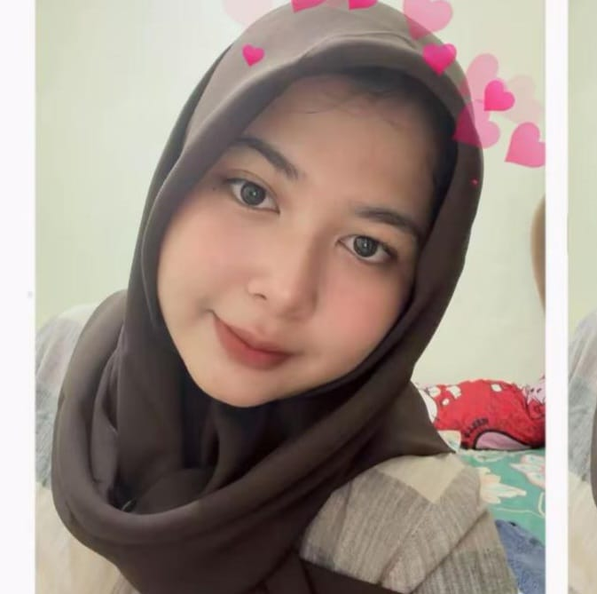
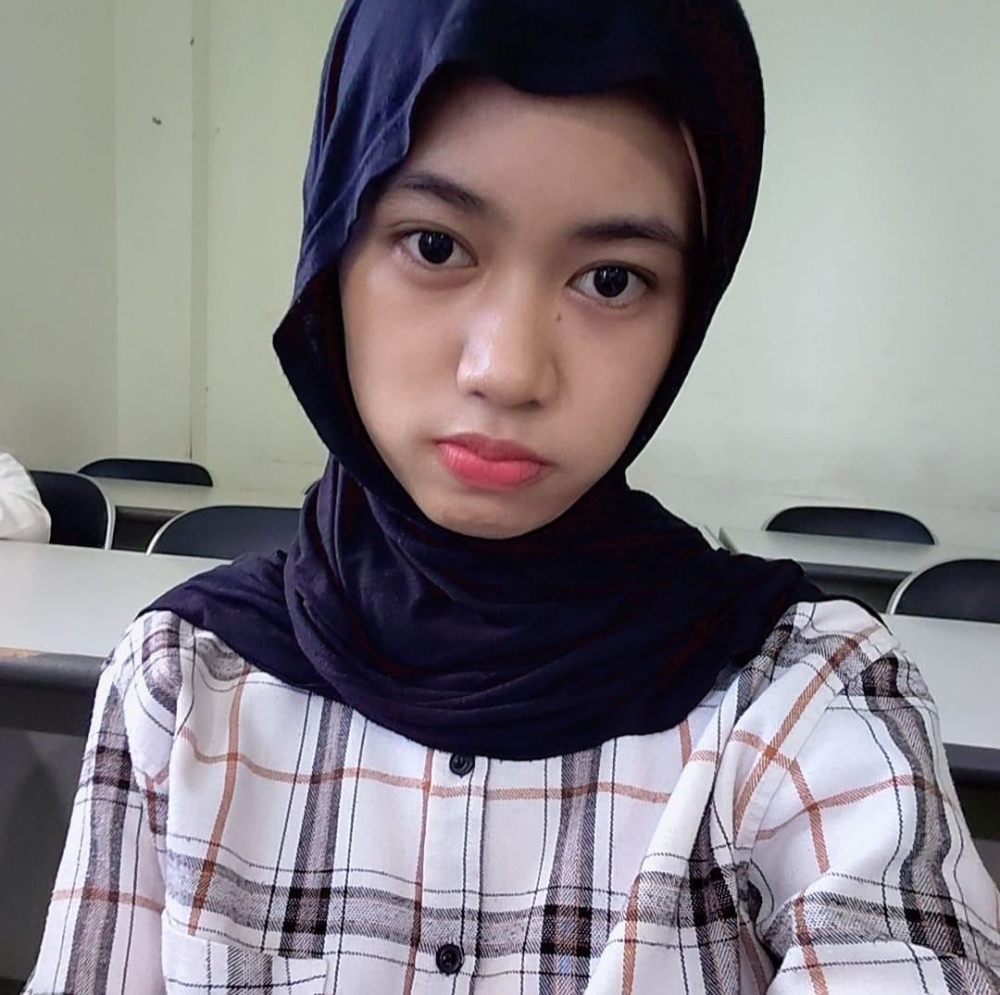
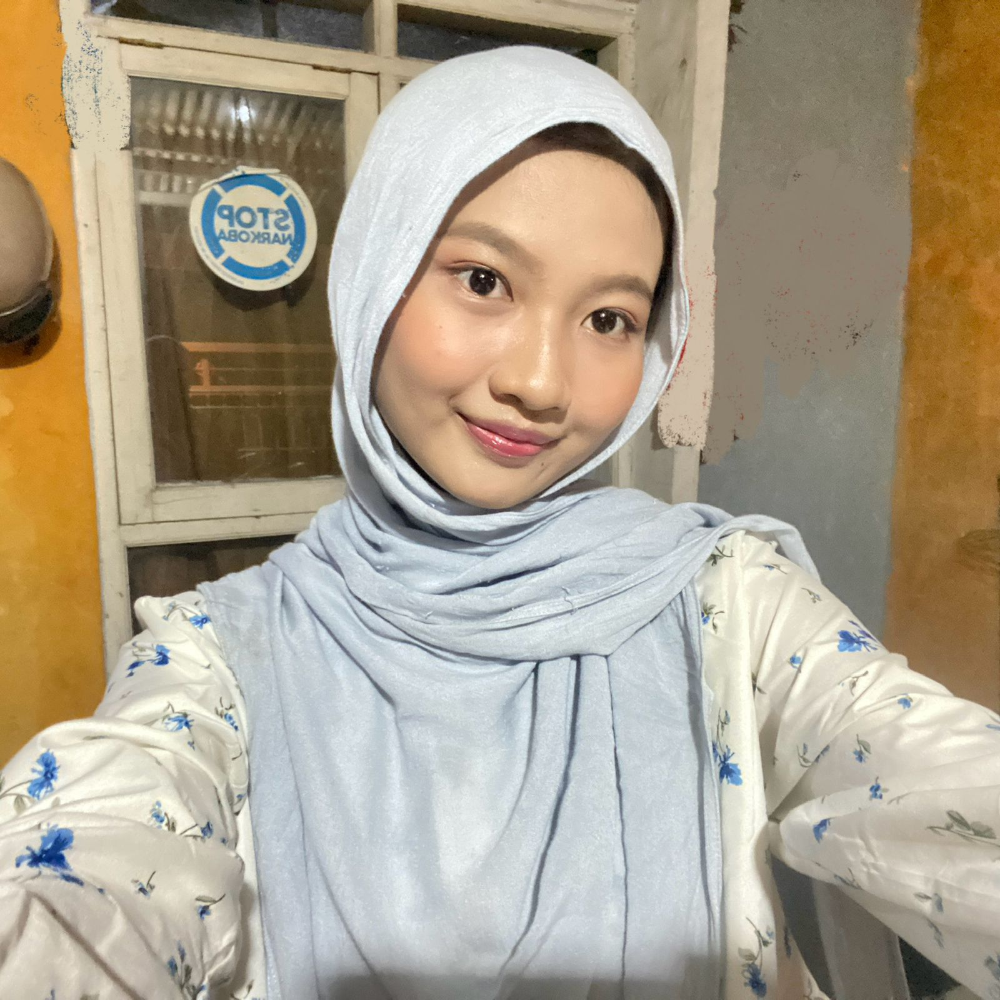

Nayla
Backend

Sabrina
Frontend

Aliqa
Database

Ezrina
UI/UX
Tentang Kami
Kami adalah tim mahasiswa informatika yang terdiri dari Nayla, Ezrina, Aliqa, dan Sabrina yang berfokus pada pengembangan solusi digital di bidang kesehatan. Melalui proyek MedMinder, kami merancang sistem untuk membantu pengguna mengatur dan memantau konsumsi obat secara lebih teratur, efisien, dan terstruktur.
Dalam pengembangannya, Nayla berperan sebagai backend developer, Ezrina sebagai UI/UX designer, Aliqa dalam pengelolaan database, dan Sabrina pada pengembangan frontend. Kami berharap aplikasi ini dapat membantu meningkatkan kedisiplinan pengguna dalam menjaga kesehatan melalui pemanfaatan teknologi yang sederhana namun efektif.
Portofolio
QR Login
Jadwal
Tracking
Export